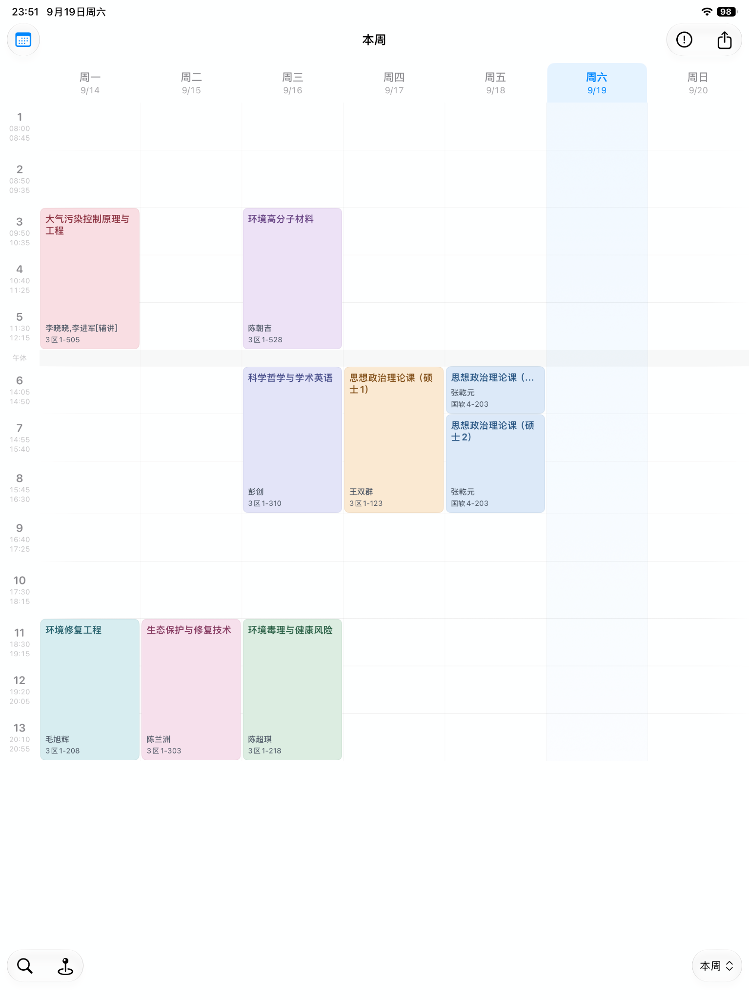

第一张课表，
不必从零填起。
教务导入、AI 识别辅助、课表码或手动添加。先看清，再确认。
导入课表核对预览准备出发
教务导入按学校适配；网页在设备上解析。自动导入不可用时，仍可手动添加。
为大学生活而设计
下一节课、下一场考试、下一个学期。
让每一次打开，都少一点匆忙，多一点从容。
一次买断 · 无订阅 · 无广告
让层次更清楚，让今天更轻松。
把安排交给课表，把时间留给自己。
第 3 周
可交互功能示意 · 点选日期，看看今天
一份安排，陪你从早到晚。
从一节课，到一整个学期
那些真实的校园日常，都有自己的位置。
教务导入、AI 识别辅助、课表码或手动添加。先看清，再确认。
教务导入按学校适配；网页在设备上解析。自动导入不可用时，仍可手动添加。
补班不等于补课。放假、补课和照常上课，都按你的学校来。
示例日期，仅用于交互演示；实际安排以学校校历为准。
临时换教室，也能有条不紊。预览影响范围，每次修改都心里有底。
第 3 周 · 周三09:50–12:15
3 区 1-528第 4 周 · 周三09:50–12:15
3 区 1-528不用每次，都打开手机
大屏看整周，抬腕看下一节。让每块屏幕，各尽其用。
更大的视野
课程与空闲，在大屏上都更清楚。向前看看，让这一周心中有数。
App 实际界面
时间记得，教室也记得。为课程绑定地点，按需开启到达提醒。
考试、成绩、学分与自定义 GPA 规则，让整个学期有迹可循。
不同学期、学校或身份，各自有独立的课程与学习安排。
课表码或课表图片，把需要的信息分享给同学。
属于你的日常，也属于你自己
无需注册应用账号，没有广告与分析 SDK。
学习数据在设备上；同步时，走你自己的 iCloud。
教务导入按学校适配。使用学校提供的 HTTPS 教务入口；如果解析失败，可以使用 AI 识别辅助、课表码或手动添加。导入前请核对课程与周次。
查课啦采用 App Store 付费下载买断制，无订阅、无内购、无广告。实际价格与设备要求以 App Store 页面为准。
主动开启 iCloud 后，学习数据通过当前 Apple ID 的 CloudKit 私有数据库同步。证件卡片照片保留在本机，不进入 iCloud。
请确认应用内对应提醒和系统通知权限已开启，并核对课程时间与周次。专注模式可能影响通知显示。
本机数据可在“我的 → 设置 → 数据管理”中清除。关闭 iCloud 同步并不会删除云端副本；完整步骤请查看“隐私选择与数据删除”。
它们是同一实时活动的两种呈现，系统不支持分别开启。具体显示效果取决于设备与系统支持。
加入我们 / 一起把小事做好
我们在寻找愿意一起打磨产品、连接校园生活的伙伴。如果你擅长运营、内容、设计，或有一个值得尝试的合作想法，欢迎来聊聊。
mcwhirl@qq.com
写下你的擅长、想法，以及希望一起做的事。
联系我们 / 保持连接
下一节课，查课啦。
为你补充一天的查克拉。